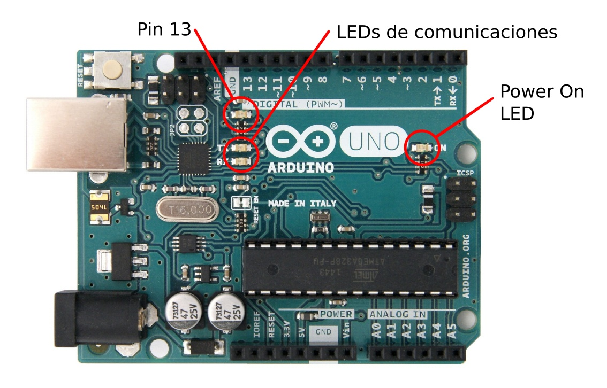
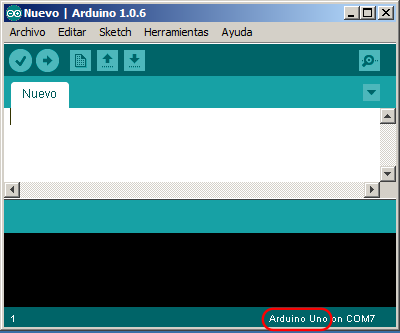

Solución de problemas con Arduino¶
¿Está conectada la placa Arduino?¶
El cable USB debe estar conectado al ordenador y a la placa Arduino. El ordenador debe estar encendido.
Si todo ha salido bien, la placa Arduino muestra un led encendido llamado led de Power ON:
{kind=link}
¿Está instalado el entorno de Arduino?¶
El entorno Arduino IDE se puede descargar desde la página oficial del proyecto en la pestaña 'software', pulsando el sistema operativo adecuado en el apartado 'Download the Arduino IDE':
Una vez descargado el programa, se debe instalar en el ordenador. También es necesario instalar los drivers para que el ordenador reconozca la placa Arduino cuando se conecte a un puerto USB.
¿Está configurada la placa correcta?¶
En el menú Herramientas... Placa: o en las versiones antiguas
Herramientas... Tarjeta... hay que configurar la misma placa
Arduino que esté conectada al ordenador.
El modelo más habitual es Arduino Uno, pero depende de la placa que
se conecte.
Tanto la placa como el puerto seleccionados pueden verse la esquina inferior derecha del entorno Arduino:
¿Está configurado el puerto correcto?¶
En el ordenador existen varios puertos serie. Solo uno de esos puertos serie pertenece a la placa Arduino y ese es el que debemos configurar.
El puerto de comunicaciones seleccionado puede verse en la esquina inferior derecha del entorno Arduino:

Para cambiarlo hay que pulsar el puerto adecuado el menú
Herramientas... Puerto...
Para comprobar que el puerto está bien configurado, se puede abrir el monitor serie, y los ledes de comunicaciones de la placa Arduino deben parpadear. Otra prueba consiste en intentar enviar un programa. Mientras carga el programa, los ledes de comunicaciones deben parpadear.
¿Están instalados los drivers adecuados?¶
Si el entorno de Arduino ya está instalado y el ordenador no reconoce la placa Arduino al conectarla, el problema puede resolverse instalando los drivers que vienen con el software del entorno Arduino.
A continuación se ofrecen varias versiones de los drivers para Arduino. Después de descargar el archivo, se debe descomprimir y ejecutar el software de instalación.
Si se utiliza una placa compatible con Arduino con un chip de comunicaciones CH340, es necesario instalar otro driver diferente al estándar:
¿Existe un cortocircuito?¶
Si la placa Arduino parece estar correctamente conectada y a pesar de ello el led de encendido permanece apagado, es posible que los cables conectados a Arduino estén mal conectados y provoquen un cortocircuito. Para comprobar este error se debe desconectar el cable conectado al terminal de '5v' y el cable conectado al terminal 'Vin'.
¿Funcionan las comunicaciones del cable USB?¶
Otro problema que puede surgir con el cable USB consiste en que los hilos de comunicaciones estén cortados mientras que los hilos de alimentación funcionen correctamente. En este caso el led de la placa Arduino se encenderá, pero el ordenador no reconocerá la placa y no funcionarán las comunicaciones.
La forma más sencilla de comprobar que no existen problemas con el cable USB es conectar este cable a otro aparato que funcione correctamente o cambiar el cable por otro y comprobar que todo funciona bien.
Comprobar si la placa Arduino está bien instalada¶
Para asegurar que la placa Arduino está bien instalada y todo funciona correctamente, se seguirán los siguientes pasos:
Abrir el entorno IDE de Arduino pulsando sobre su icono:

Abrir un programa de ejemplo pulsando en el menú
Archivo... Ejemplos... 01.Basics... Blink.También se puede copiar y pegar el siguiente programa en el entorno de Arduino.
1 2 3 4 5 6 7 8 9
// Blink Program void setup() { pinMode(LED_BUILTIN, OUTPUT); } void loop() { digitalWrite(LED_BUILTIN, HIGH); // turn the LED On delay(1000); // wait for a second digitalWrite(LED_BUILTIN, LOW); // turn the LED Off delay(1000); // wait for a second }
Por último, pulsar en el menú
Programa... Subir (CTRL+U)para transferir el programa a la placa Arduino.
Si todo ha funcionado correctamente, el led de la placa Arduino comenzará a parpadear con un tiempo encendido de un segundo y un tiempo apagado de otro segundo.